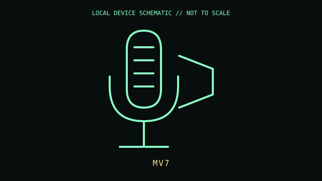

[ IMAGING AND AUDIO-CAPTURE PERIPHERALS // IDENTIFIED COMPONENT ]
Shure MV7 Podcast Microphone
Dynamic cardioid broadcast-style microphone with independent USB and balanced XLR output paths.

MODEL IDENTIFICATION: Manufacturer identity: MV7 (original USB Micro-B / XLR version). Compare the unit label, regional suffix, and revision against the manufacturer's manual before repair or compatibility claims.
Model specifications
| Catalog subcategory | Imaging and audio-capture peripherals |
|---|---|
| Exact model / ID | MV7 (original USB Micro-B / XLR version) |
| Model-specific features | USB Micro-B digital connection and 3-pin XLR analog output; integrated 3.5 mm headphone monitoring; touch-panel controls; microphone frequency response 50 Hz–16 kHz. |
| Interface and host support | USB audio controls and automatic level functions require Shure MOTIV software/app support. XLR output is analog and requires a compatible preamp; USB and XLR feature sets are not identical. |
| Revision / driver caveat | This record covers the original MV7 with Micro-B connector, not MV7+, which has different connectivity. Confirm rear-panel labeling and connector before selecting cables or software. |
Preservation and service notes
Use a stable stand and avoid impacts to the suspension/yoke. Clean the grille without immersing it; disconnect cables before cleaning and do not apply solvents to the touch controls.
Record the as-found label, accessories, host OS, driver/firmware version, and test method. Separate observed condition from published specifications; do not treat family-level feature claims as proof of a unit's revision.
Primary manufacturer documentation
- Shure MV7 product page and specificationsManufacturer specifications and support for original MV7 and related variants.
- Shure MV7 user guideManufacturer manual for connection, controls, MOTIV use, and care.
Manufacturer pages may change or retire. Preserve a copy of the applicable manual and note its revision when documenting a physical unit.